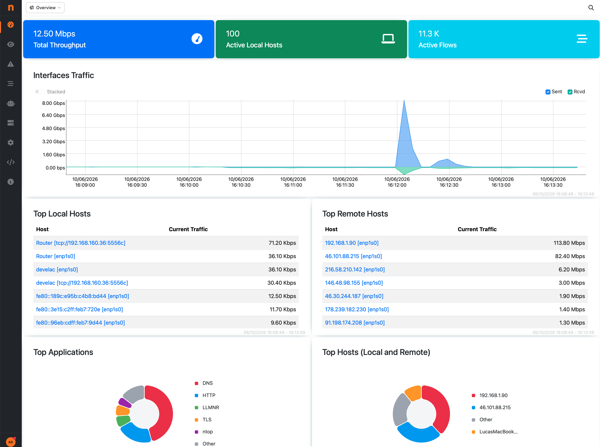

Обзор
Если ntopng контролирует более одного сетевого интерфейса, раскрывающееся меню «Интерфейсы» вверху панель инструментов содержит дополнительный Обзор вход. При его выборе веб-GUI переключается на вид, который объединяет данные всех локальных интерфейсов экземпляра ntopng, так что на одной странице отображаются общую картину, а не один интерфейс за раз.
Обзор не требует какой-либо настройки: он вычисляется по требованию интерфейсов. ntopng уже осуществляет мониторинг. Это не сам интерфейс, в командную строку ничего не добавляется, и никакая дополнительная обработка трафика в фоновом режиме не происходит. Это главное отличие от Посмотреть интерфейсы, которые созданы через командную строку и объединить трафик базовых интерфейсов в реальный логический интерфейс.
Запись «Обзор» отображается в раскрывающемся списке, если:
ntopng контролирует два или более интерфейсов ( Системный интерфейс не учитывается) и
Интерфейс просмотра не настроен. Когда существует интерфейс просмотра, это и есть предполагаемый способ просмотра. агрегированные данные, а запись «Обзор» скрыта.
Если выбран «Обзор», в меню отображаются только те страницы, на которых можно объединить данные всех интерфейсы. Остальные пункты меню отключаются с помощью Недоступно в обзоре намекать; выберите обычный интерфейс из раскрывающегося списка, чтобы получить к ним доступ.
Панель управления
Обзор имеет собственную панель управления. Счетчики, диаграммы и таблицы рассчитываются путем запроса каждого локальный интерфейс и объединение результатов: диаграммы трафика показывают общее количество по всем интерфейсам, в то время как таблицы Top Local/Remote Hosts сообщают рядом с каждым хостом имя интерфейса, на котором хозяин был замечен.

Обзорная панель
Отчет и исторические потоки
В Обзоре также доступны Отчет и Обозреватель исторических потоков: запросы возвращают потоки и данные всех интерфейсов. В обозревателе исторических потоков интерфейс, в котором каждый поток имеет об увиденном сообщается в отдельной колонке.
Детали интерфейса
На странице «Сведения об интерфейсе» отображаются общие сведения обо всех локальных интерфейсах: трафик, пакеты, капли, потоки, экспортеры потоков и зонды (для интерфейсов коллекторов), статистика экспорта базы данных и счетчики оповещений. Список агрегируемых интерфейсов отображается вверху страницы. вместо идентификационной информации (имя, MAC-адрес, скорость и т. д.) одного интерфейса. Счетчики обновляются автоматически, как и в обычном интерфейсе.
Показана только та информация, которую можно осмысленно суммировать. Разделы для каждого интерфейса, такие как доступны использование хранилища, запись трафика, захват в реальном времени и диаграммы разбивки трафика. выбрав фактический интерфейс.
Исторический На вкладке показаны временные ряды, суммированные по всем локальным интерфейсам. Включение Сложенный переключатель на диаграмме разбивает ее на одну серию для каждого интерфейса, расположенную поверх каждого другое, чтобы был виден вклад каждого интерфейса в общую сумму.
Сбросить счетчики действие сбрасывает счетчики всех локальных интерфейсов.
Оповещения
Если ClickHouse включено, обозреватель оповещений доступен в обзоре и отображает оповещения всех интерфейсов, как задействованных, так и прошлых оповещений. Все действия проводника работают на весь набор оповещений: фильтры, подтверждение и удаление оповещений, а также открытие подробностей оповещений.
Действия, относящиеся к одному интерфейсу, например потоки данных хоста или извлечение трафик потока из записи трафика требует перехода на реальный интерфейс.
Примечание
Оповещения доступны в обзоре только при включенном ClickHouse. По умолчанию (SQLite) в базе данных оповещений меню «Предупреждения» в обзоре отключено.
Поиск
В Обзоре поле поиска на верхней панели инструментов всегда ищет хосты на всех интерфейсы независимо от Поиск во всех интерфейсах предпочтение. Каждый результат сообщает интерфейс, в котором был найден хост:
щелчок по хосту открывает страницу его сведений в интерфейсе, где хост активен;
тот Оповещения и Исторические потоки значки рядом с результатом открывают эти страницы в Обзор, отфильтрованный по хосту, поэтому результаты охватывают все интерфейсы.